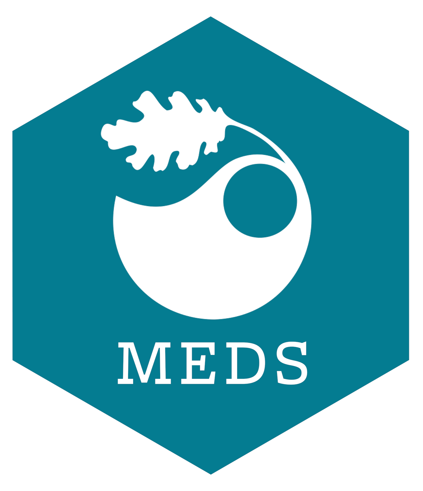

Instructor

Master of Environmental Data Science (MEDS)

Add your own relevant image to the images/ folder, then update the file name in index.qmd so that it points to the correct image.
index.qmd file in your repo’s root directoryindex – do not change this name; it also should live in the root directory of your projectThis course will present state of the art program evaluation techniques necessary to evaluate the impact of environmental policies. The program evaluation methods presented will aim at identifying and measuring the causal effect of policies, regulations, and interventions on environmental outcomes of interest. Students will learn the research designs and methods for estimating causal effects with experimental and non-experimental data. This will prepare the students for interpreting and conducting high-quality empirical research, with applications in cross-sectional data and panel data settings.
This website was developed from a template authored by Sam Csik. This new website houses materials which are heavily reused, adapted from, and inspired by Sam Csik’s original work.